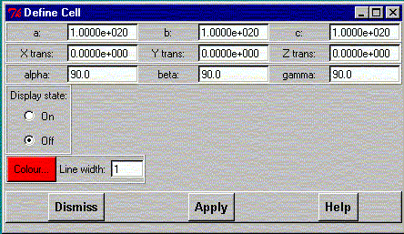
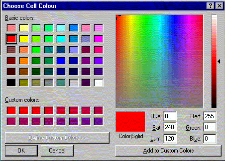

**************************************************************************
Define cell widget
Leif Laaksonen CSC 1996
**************************************************************************
The purpose of this widget is to define the properties of a cell (box) and control the display of the cell (box). The cell (box) can be usefull when one is displaying a molecular dynamics simulation (trajectory), that is using periodic boundary conditions.
Define the cell properties, a, b and c distances (in Angstrom). The cell is by default placed in the center of the screen (or around the 0.0, 0.0, 0.0). However, the cell can be translated by defining the translation distances. The alpha, beta and gamma angles can (hopefully) some time be defined. Currently the angles can only be 90 degrees.
The cell can be displayed by changing the "Display state" to ON. The colour of the cell and the width of the cell (in pixels) can also be changed. Click on the "Colour" button to change the colour.

Pick the colour from the colour palette.

Line command: see define command
**************************************************************************
LUL/1996
**************************************************************************